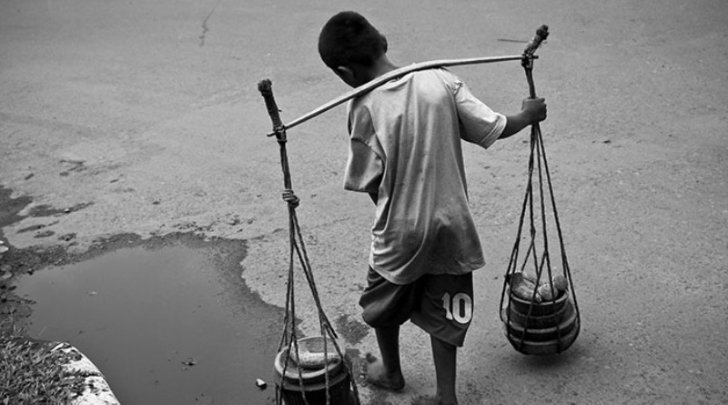

Estatuto da criança e do adolescente
O eca (estatuto da criança e do adolescente) trata dos direitos de creanças e adolescentes, esse instrumento normativo foi promulgado em 13 de julho de 1990 com o objetivo de garantir às crianças e adolescentes condições de desenvolvimento moral, físico, social e mental.
Alguns artigos:
- Art. 1º Esta Lei dispõe sobre a proteção integral à criança e ao adolescente.
- Art. 2º Considera-se criança, para os efeitos desta Lei, a pessoa até doze anos de idade incompletos, e adolescente aquela entre doze e dezoito anos de idade.
- Art. 4º É dever da família, da comunidade, da sociedade em geral e do poder público assegurar, com absoluta prioridade, a efetivação dos direitos referentes à vida, à saúde, à alimentação, à educação, ao esporte, ao lazer, à profissionalização, à cultura, à dignidade, ao respeito, à liberdade e à convivência familiar e comunitária.
- Art. 7º A criança e o adolescente têm direito a proteção à vida e à saúde, mediante a efetivação de políticas sociais públicas que permitam o nascimento e o desenvolvimento sadio e harmonioso, em condições dignas de existência.
- Art. 65. Ao adolescente aprendiz, maior de quatorze anos, são assegurados os direitos trabalhistas e previdenciários.
- Art. 70. É dever de todos prevenir a ocorrência de ameaça ou violação dos direitos da criança e do adolescente.

- Art. 71. A criança e o adolescente têm direito a informação, cultura, lazer, esportes, diversões, espetáculos e produtos e serviços que respeitem sua condição peculiar de pessoa em desenvolvimento.
- Art. 81. É proibida a venda à criança ou ao adolescente de armas, munições e explosivos, bebidas alcoólicas, produtos cujos componentes possam causar dependência física ou psíquica ainda que por utilização indevida, fogos de estampido e de artifício, exceto aqueles que pelo seu reduzido potencial sejam incapazes de provocar qualquer dano físico em caso de utilização indevida, revistas e publicações a que alude o art. 78, bilhetes lotéricos e equivalentes.

- Art. 82. É proibida a hospedagem de criança ou adolescente em hotel, motel, pensão ou estabelecimento congênere, salvo se autorizado ou acompanhado pelos pais ou responsável.
- Art. 223. O Ministério Público poderá instaurar, sob sua presidência, inquérito civil, ou requisitar, de qualquer pessoa, organismo público ou particular, certidões, informações, exames ou perícias, no prazo que assinalar, o qual não poderá ser inferior a dez dias úteis.